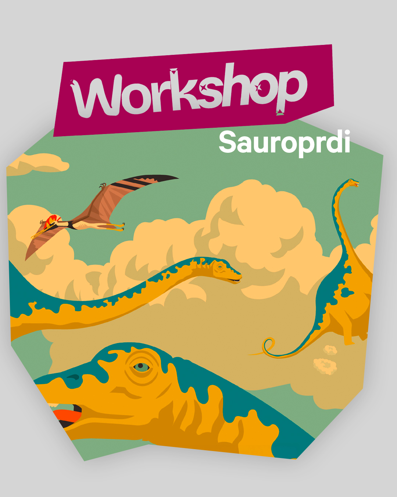

Sauroprdi

Pavel Ryška & Jan Šrámek
Sauroprd Anatomy — a programme for the children’s book Sauroprdi (Paseka / FaVU VUT, 2026). Suitable for children aged 6 and up. Duration: 45 minutes + 60-minute dinosaur drawing workshop.
Pavel Ryška and Jan Šrámek present a richly illustrated book that blends fantasy with scientific fact. Children can look forward to a fun lecture about the biggest farts in alternative prehistory and a collaborative animation in which they will — with their own hands and gastroliths — break down tough vegetarian fare. They will discover how sauropords produced gas in their intestines and stomachs, what they used it for, and why it ended up being bad news for the entire planet. The first five participants receive plump heroes from the book, complete with acoustic effect :)
Pavel Ryška
Jan Šrámek